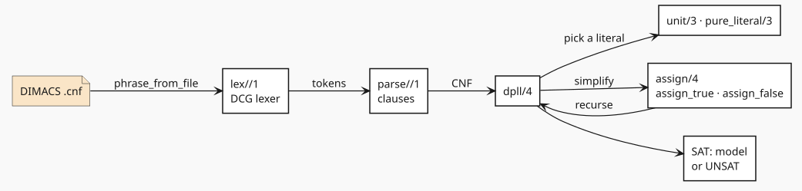

- Role
- Author
- When
- Nov 2025 – Feb 2026
- Stack
- SWI-Prolog, DCGs
- Links
- Repository · Try it online (SWISH) · Notebook
What it is
sat.pl takes a formula written with |, &, -> and ~, turns it into CNF and solves it. sat_dimacs.pl reads CNF files in DIMACS format instead, the format SATLIB uses.
How the solver works
- Unit clauses first. If a clause has a single literal, that variable is forced. The cut commits to it.
- Then pure literals. A variable that only appears with one sign gets that value.
- Then a decision. The first unassigned variable, true first; Prolog backtracks into false if that branch hits an empty clause.
- Simplify as you go. Assigning a value drops the clauses it satisfies and removes the literals it makes false.
Code overview
Everything is in sat_dimacs.pl, about 150 lines:

diagrams/sat.puml).Lexer
A DCG over the file's characters. Comment lines are skipped, and the header must have two spaces before the clause count, as in the SATLIB files.
tok(end_clause) --> "0".
tok(var(not(X))) -->
"-", integer(X).
tok(var(X)) -->
integer(X).
tok(header(Vars, Clauses)) -->
"p", " ",
"cnf", " ",
integer(Vars), " ",
integer(Clauses).Parser
Turns the token stream into a list of clauses; 0 ends a clause.
parse([Clause|Clauses]) -->
disjunction([], ClauseRev), !,
{ reverse(ClauseRev, Clause)
},
parse(Clauses).
parse([]) -->
[].
disjunction(C, C) -->
[end_clause], !.
disjunction(Acc, Clause) -->
[var(V)],
disjunction([V|Acc], Clause).dpll/4
The solver. Each clause is one rule, tried in order: done, conflict, unit clause, pure literal, decision.
% SAT
% -SAT is the set of attributions to the vars
dpll([], SAT, SAT, _) :- !.
% UNSAT
dpll(Phi, _, _, _) :-
member([], Phi), !,
fail.
dpll(Phi, Test, SAT, Symbols) :-
member(Sym, Symbols),
unit(Phi, Sym, T), !,
assign(Phi, Sym, T, Assigned),
select(Sym, Symbols, Chopped),
dpll(Assigned, [T|Test], SAT, Chopped).
dpll(Phi, Test, SAT, Symbols) :-
member(Sym, Symbols),
pure_literal(Phi, Sym, T), !,
assign(Phi, Sym, T, Assigned),
select(Sym, Symbols, Chopped),
dpll(Assigned, [T|Test], SAT, Chopped).
dpll(Phi, Test, SAT, [Sym|Symbols]) :-
!,
assign(Phi, Sym, T, Assigned),
dpll(Assigned, [T|Test], SAT, Symbols).Choosing a literal
A unit clause forces its variable; a pure literal appears with only one sign.
pure_literal(Phi, Sym, t(Sym)) :-
\+ ( member(C, Phi)
, member(not(Sym), C)
).
pure_literal(Phi, Sym, f(Sym)) :-
\+ ( member(C, Phi)
, member(Sym, C)
).
unit(Phi, Sym, t(Sym)) :- member([Sym], Phi).
unit(Phi, Sym, f(Sym)) :- member([not(Sym)], Phi).Simplifying
Setting a variable true drops the clauses that contain it and removes its negation from the rest. An emptied clause is the conflict dpll/4 looks for.
% True assignment -------------------------------------------
assign_true([Clause|Clauses], Sym, NewClauses, Assigned) :-
member(Sym, Clause), !,
assign_true(Clauses, Sym, NewClauses, Assigned).
assign_true([Clause|Clauses], Sym, NewClauses, Assigned) :-
include({Sym}/[P]>>(P\=not(Sym)), Clause, NoSym),
assign_true(Clauses, Sym, [NoSym|NewClauses], Assigned).
assign_true([], _, NewClauses, NewClauses).Benchmark
One run over SATLIB's uf20-91 set: 1000 random 3-SAT instances, each with 20 variables and 91 clauses, all satisfiable. The solver found a model for all 1000.
| Instances | 1000 (uf20-91) |
|---|---|
| Inferences | 213,752,366 |
| CPU time | 21.882 s |
| Wall time | 21.881 s |
| Speed | 9,768,366 LIPS |
Inferences are SWI-Prolog's count of predicate calls; LIPS is inferences per second. So the whole set took about 22 seconds on one core. The README notes a single 50-variable instance takes roughly 79 million inferences, so harder sets are out of reach. Full output.
History
- 15 Nov 2025Formula parser and a first solver.
- 16 Nov 2025Rewritten as a bare-bones DPLL.
- 17 Nov 2025Unit propagation, then pure literal elimination; the SWISH notebook.
- 18 Nov 2025DIMACS input, the uf20-91 benchmark run, and one solution instead of all of them.
- 4 Feb 2026Tests run in parallel.